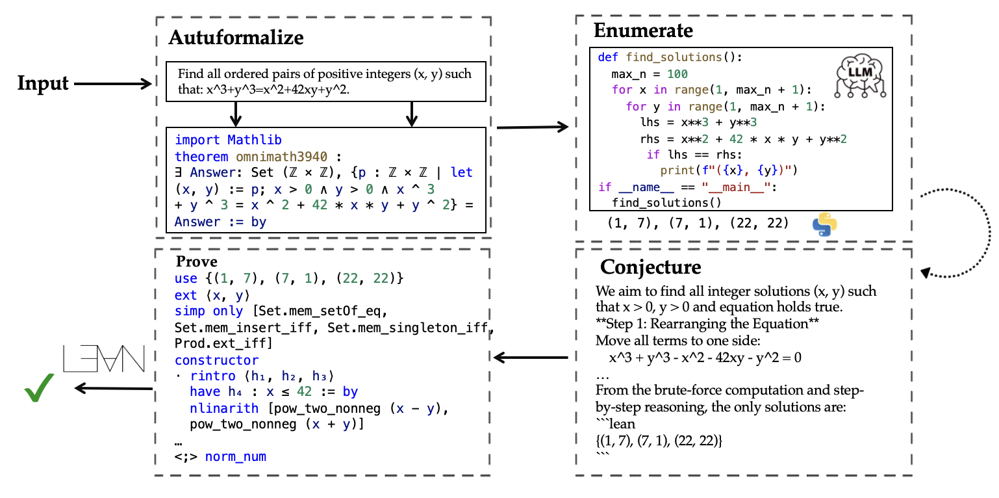
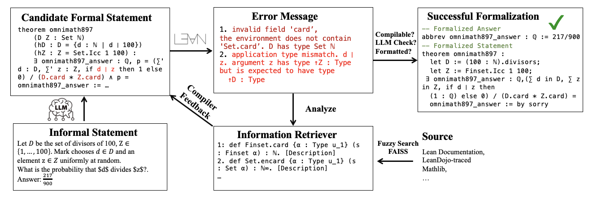

Builds a Lean-targeted framework where LLMs enumerate and conjecture answers and prover LLMs produce Lean proofs, plus a dataset of autoformalized Lean statements.
Abstract
Large language models (LLMs) have achieved remarkable progress in formal mathematical reasoning. Mathematical competition problems fall into two broad types: theorem-proving problems ask for a proof of a fully specified statement, whereas answer-construction problems ask the solver to construct an answer object and prove that it satisfies the stated specification. Existing mathematical reasoning engines mainly target theorem-proving problems, yet answer-construction problems remain less studied. This setting is challenging because model capabilities are misaligned, with general LLMs better suited to answer construction and prover LLMs better suited to proof generation, and because Lean proof checking alone does not rule out inadmissible circular witnesses. To close this gap, we introduce Enumerate-Conjecture-Prove (ECP), a neuro-symbolic framework for solving answer-construction problems in Lean. ECP uses general LLMs to perform bounded enumeration and construct candidate answers, and invokes prover LLMs to produce machine-checked proofs. ECP introduces admissibility checking to ensure that each answer is canonical and does not involve a circular argument. On answer-construction problems from PutnamBench and autoformalized MathArena, ECP formally solves 17/346 PutnamBench instances and 18/75 MathArena instances with admissible answers and proofs, outperforming LLM baselines at aligned inference budgets.
Problem
Competition answer-construction problems require producing an answer object and proving it meets the specification. These problems are less studied than pure theorem proving. General LLMs are better at finding answers while prover LLMs are better at proofs, and Lean checking alone does not rule out circular answers that just restate the problem.
Approach
Enumerate-Conjecture-Prove (ECP) uses general LLMs to write bounded enumeration code and conjecture candidate answers. It then invokes prover LLMs such as DeepSeek-Prover-V2 to generate machine-checked Lean proofs. An admissibility check requires answers to be canonical rather than circular. The authors also build ConstructiveBench, 3,431 competition problems formalized in Lean through an iterative autoformalization loop with compiler-error feedback, documentation retrieval, and an LLM judge.

Figure 2 : Illustration of the ECP framework applied to a Balkan MO Shortlist problem in ConstructiveBench.

Figure 1 : Overview of the autoformalization pipeline with error-based feedback and documentation retrieval: An informal statement is first processed by the LLM to produce a formalization. If the result fails either the Lean compilation check or the semantic check by an LLM judge, error messages and relevant Lean documentation are retrieved and fed back to the LLM. The process continues iterativel
Results
ECP raised gpt-4.1-mini answer-construction accuracy on ConstructiveBench from 14.54% (CoT) to 45.06%. Paired with DeepSeek-Prover-V2-7B, it proved 858 of 3,431 problems (25.01%) end-to-end. The abstract reports 17/346 PutnamBench and 18/75 MathArena instances solved with admissible answers.